Embedded systems
Firmware, serial communication (UART, CAN, SPI) and supervision interfaces in C++ and Qt.
> Electrical Engineer
Electrical engineer, graduate of the National Engineering School of Tunis. I design electronic systems from the board to its software: embedded firmware, power electronics and PCB layout. Recently, I developed several Qt/C++ interfaces for CAN/CAN FD communication and for equipment qualification with an NI USB device.
I am an electrical engineer, a graduate of the National Engineering School of Tunis (ENIT). Alongside my academic path and projects, I have gained hands-on experience in different fields through three internships. At Autoliv, I discovered the industrial environment by monitoring production lines, analyzing performance indicators (TRS/OEE) and contributing to continuous improvement actions (Kaizen, 5S), which gave me a rigorous, data-driven mindset. At the Power Electronics laboratory of ENIT, I designed a cable cut-detection board from schematic to fabricated prototype, developing its PIC12F675 firmware in C and validating the design in PSpice. During my final-year internship at SERMA International, I developed Qt/C++ interfaces for CAN/CAN FD and RS-232 communication, as well as a qualification interface for aeronautical equipment, within an agile Scrumban team.
Together, these experiences allow me to bridge power electronics, PCB design and embedded software, and to carry a project from design to validation. What I love most is the meeting point between hardware and software. I am looking for a first engineering position where I can design, test and commission complete electronic systems.
Firmware, serial communication (UART, CAN, SPI) and supervision interfaces in C++ and Qt.
Sizing and simulation of converters, control, measurements and validation.
Schematic capture, placement and routing, EMC rules and preparation of manufacturing files.
2026
SERMA International · SERMA Software, Aeronautics Division
Designed a supervision and qualification application for a test bench.
2023 – 2026
National Engineering School of Tunis (ENIT)
2025
Power Electronics Laboratory, ENIT, Tunis
Designed a cable cut-detection PCB and developed the PIC12F675 firmware in C using MPLAB IDE. Validated the circuit design in PSpice and tested the fabricated board.
2022
Autoliv
Monitored production lines, analyzed performance indicators (TRS/OEE) and contributed to continuous improvement actions (Kaizen, 5S).
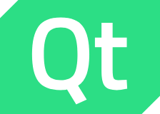
EmbeddedDeveloped Qt/C++ interfaces for RAM/FRAM data acquisition over RS-232 and real-time communication on the CAN/CAN FD bus. Designed a dual-process architecture with IPC to eliminate latency and reach sub-millisecond timing accuracy. Built a qualification interface for aeronautical equipment with NI USB-6001 signal acquisition and automatic test report generation.
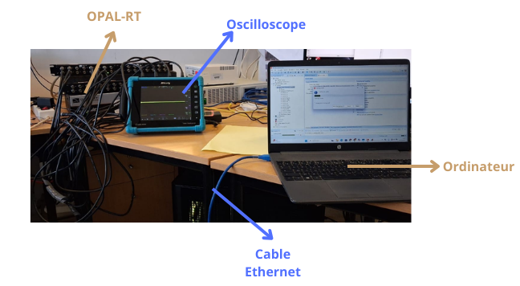
PowerStudied and modeled a 4-quadrant DC/DC converter based on GaN components for bidirectional charging, driving an inductive (RL) load. Designed a PI current regulator on the first-order RL model, with zero steady-state error and fast response, and validated four-quadrant operation in simulation. Analyzed the 10 kHz PWM current ripple and prepared the rapid-prototyping implementation.
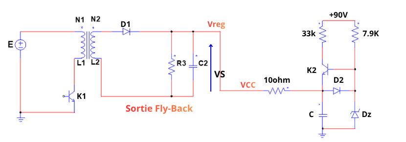
Power · PCBDesigned an isolated Flyback switch-mode power supply regulating 15 V from a 90 V input: defined the specifications, sized the transformer, rectification and filtering stages, built the SG3525 PWM control circuit and routed the board in EasyEDA following EMC rules.
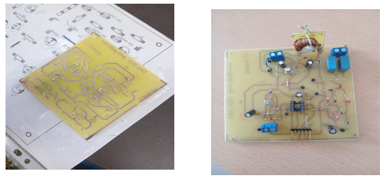
Embedded · PCBDesigned an electronic cable cut-detection board end to end: schematic, PCB routing and prototype, plus PIC12F675 firmware in C under MPLAB IDE. Sized each stage (Schmitt trigger, voltage dividers, comparator, LC filter, Villard voltage doubler), validated it in PSpice, then tested it on the fabricated board.
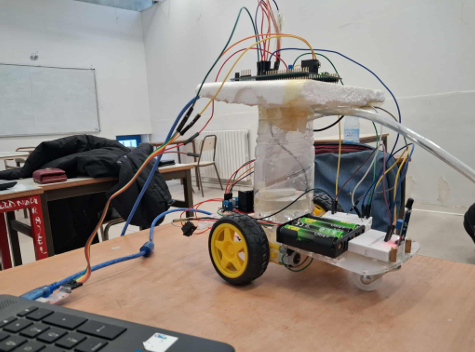
EmbeddedDesigned an autonomous firefighting robot end to end: defined the specifications, selected components and built the prototype with flame sensors, drive motors and a water pump. Developed the STM32F407 firmware under STM32CubeIDE with FreeRTOS, structuring movement, flame detection and pump control as independent tasks.
 Embedded · PCB
Embedded · PCB
Designed the schematic and PCB layout of a control board for a thyristor- and transistor-based converter using KiCad, based on a theoretical study of the circuit components and functional stages. Developed embedded C firmware for the MSP430 microcontroller using Code Composer Studio to generate PWM signals, adjust the duty cycle, and control thyristor and transistor triggering.
 Embedded
Embedded
Developed an embedded C application running on embedded Linux (BeagleBone) to control DC motor speed by generating PWM signals from a potentiometer input.
Colombia + · 2026
AFD - Agence Française de Développement · 2026
Alison · 2026
Challenging myself, staying active and enjoying every step of the journey.
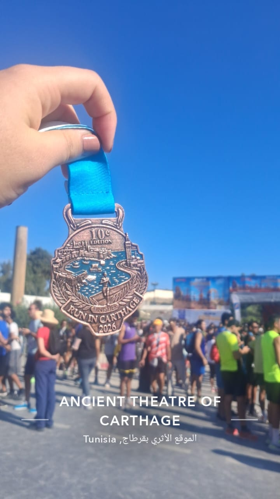
October · 2026
Six kilometers through Carthage, where every stride runs over centuries of history.
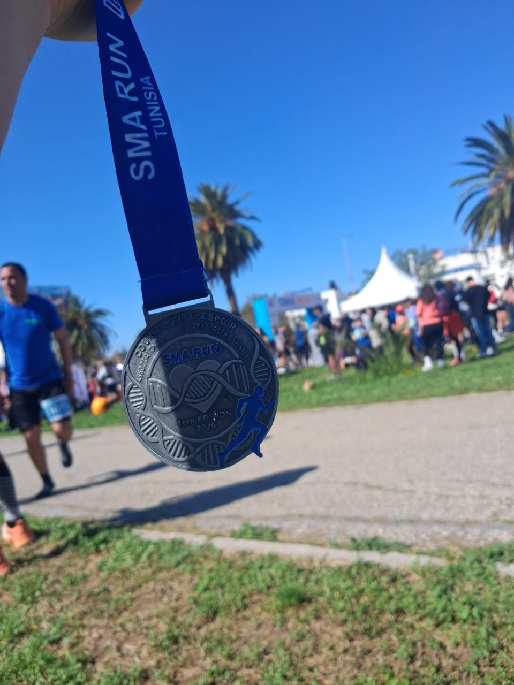
April · 2026
One crowd, one rhythm: the best kind of synchronization.
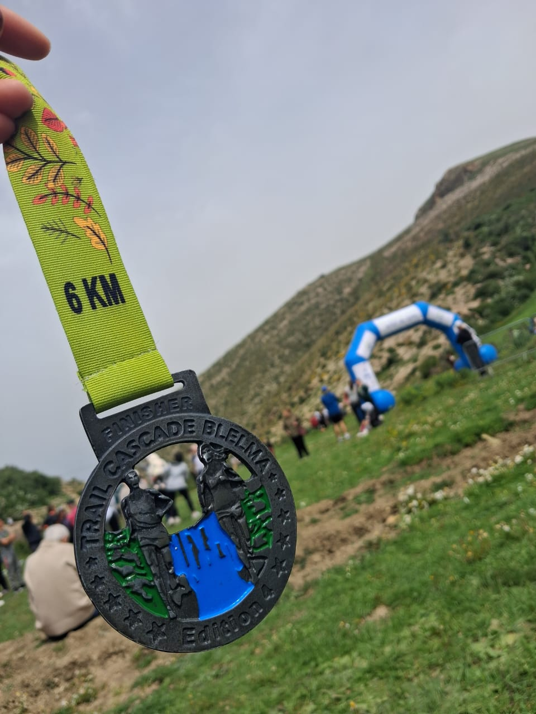
April · 2026
Rocks, roots and a waterfall: the trail where the terrain, not the watch, sets the pace.
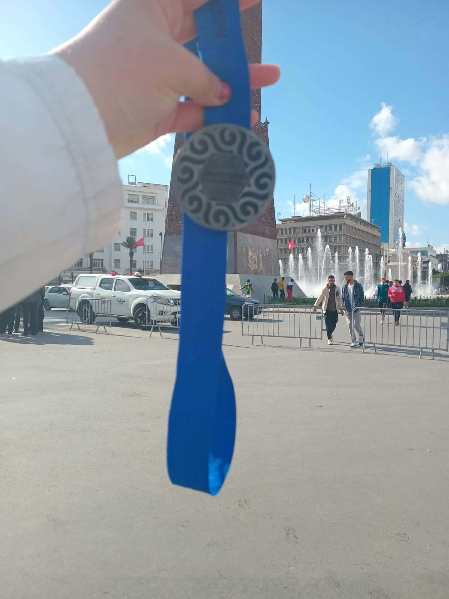
December · 2024
21 kilometers of steady regulation: no overshoot, just a consistent pace to the finish.
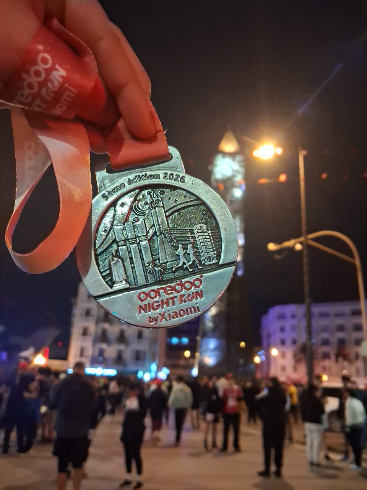
March · 2026
City lights above, fresh legs below: the night run that fully charged me up.
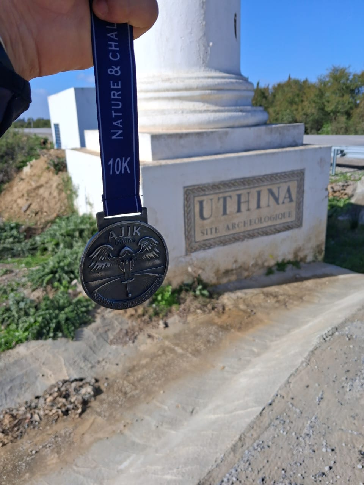
January · 2026
Starting the year with a new challenge: fresh goals, fresh legs, full power.
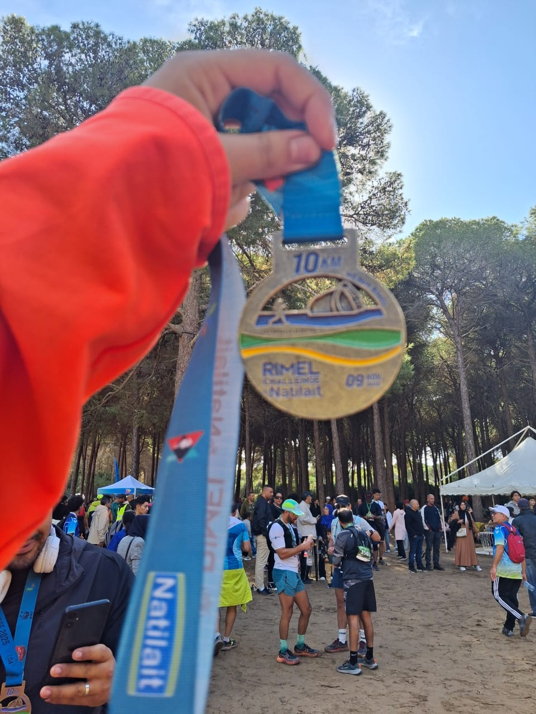
November · 2025
A late-season race that proved discipline outlasts motivation.
Have an opportunity or a question about a project? Feel free to write to me.
Social Life
Sponsorship Manager
TUNED Tunisian Engineering Day · 2024
Vice President
IEEE IAS PES JC ENIT Student Branch Chapter · 2024–2025
IEEE PES Day Ambassador
IEEE PES Day · 2024–2025
IEEE ENIT PES Representative
IEEE PES General Meeting · 2024–2025